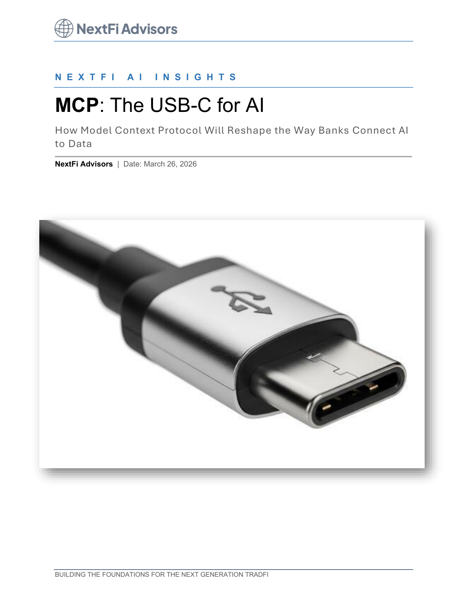

Technology Architecture
MCP: The USB-C for AI Integrations

Executive summary
- Custom one-off integrations remain one of the most expensive barriers to enterprise AI adoption.
- MCP introduces a standardized interface model that improves interoperability across systems and agents.
- Standardization lowers integration effort, shortens deployment timelines, and improves maintainability.
- Governance improves when connector behavior and permissions are designed as part of a common protocol.
- Institutions that design around standards can scale AI use cases faster with lower incremental cost.
The cost center hiding in plain sight
For many organizations, integration effort dominates AI initiative budgets. Fragmented interfaces and bespoke connectors create brittle systems and slow every additional use case.
Why protocol-level standardization changes outcomes
With a common protocol layer, teams can build once and reuse broadly. This reduces technical debt, simplifies auditability, and creates a foundation for safer multi-agent workflows.
How to operationalize MCP in enterprise environments
Practical rollout starts with high-value workflows where data access controls and action boundaries are clear. Teams can then expand coverage through modular connector libraries and standardized governance templates.